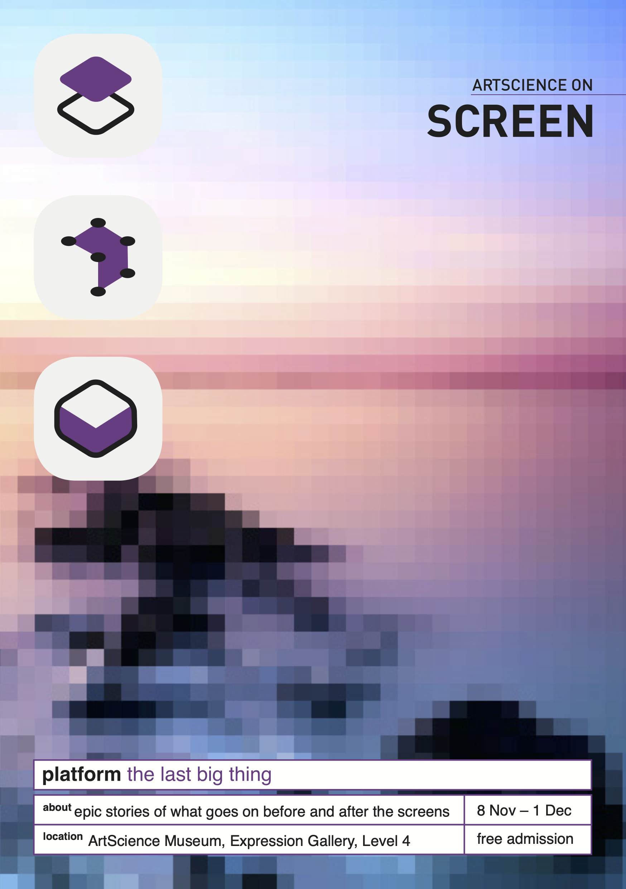

platform: the last big thing
A film programme on the epic stories of what goes on before and after the screens. Platform: The Last Big Thing is a film series dedicated to narrating the complex backend of contemporary interconnected life — tracing the causality of invisible standards, systems, and infrastructure that manage everyday existence.
The programme is organised in three independent but interwoven tracks — Platform, Processes, and Products — conforming to the three different stages of a technological platform. Told through the lens of artists, designers, practitioners, and filmmakers from around the world, these stories present everyday connectivity in all its facets: mundane and dramatic, entangled, where nothing is seamless.
Films included:
Stage 01 — Platform
Sunstone (2018) · Filipa César & Louis Henderson
A Passage (2018) · Rouzbeh Akhbari & Felix Kalmenson
AAA Cargo (2018) · Solveig Suess
Valentine in Things City (2018) · Viviane Komati
Stage 02 — Processes
What Time Is Love? (2017) · Anna Franceschini
HYPERSTITION (2016) · Christopher Roth & Armen Avanessian
nimiia cétii (2018) · Jenna Sutela
Safety Measures (2018) · Simone C. Niquille
Robot Readable World (2012) · Timo Arnall
Stage 03 — Products
Merge Nodes (2016) · Joe Hamilton
A Room with a Coconut View (2018) · Tulapop Saenjaroen
Contra-Internet: Jubilee 2033 (2018) · Zach Blas
Role: curator · film programming · graphic design
Co-curated with Ihtttt (Chantal Tan and Sant Ruengjaruwatana)
ArtScience on Screen
ArtScience Museum, Expression Gallery, Level 4
8 Nov – 1 Dec · Singapore · Free admission